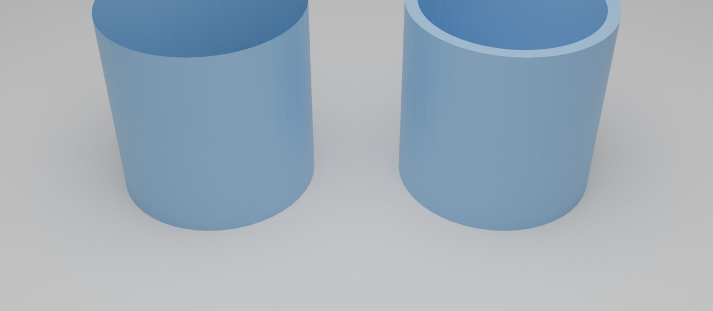

Bonus lesson
The Solidify Modifier
Faces in Blender have no thickness. A wall, a cup or a shirt modeled as a single surface is paper-thin, which breaks the illusion the moment you see its edge. The Solidify modifier takes the surface of any mesh and adds depth to it, so a flat sheet becomes a board and an open cylinder becomes a cup with walls. You used it in Lesson 7 and Lesson 8 to give the mug its walls; here is what it actually does.
1. Thickness and Offset
Thickness is the depth the modifier adds. Offset, a value between -1 and 1, decides where that new material goes: -1 grows the wall inward from the original surface, +1 grows it outward, and 0 centers it on the original mesh. Inside and outside follow the face normals. For a cup, a negative offset keeps the outside of the shell exactly where you modeled it, so the rim you shaped does not move.

2. Apply your scale first
The manual is clear on one gotcha: thickness is calculated from local vertex coordinates, so if the object has a non-uniform scale, the wall comes out thicker on some sides than others. The fix is to apply or clear the scale before solidifying, exactly as the Apply Scale bonus lesson shows. If a wall ever looks uneven, scale is the first thing to check.
3. Modes and other options
The default Simple mode just extrudes the geometry and is fast, but the manual notes it cannot handle geometry where an edge has more than two adjacent faces, and it needs the face normals to point in a consistent direction. Complex mode guarantees a closed, manifold result even on hard cases, at the cost of speed; the manual recommends staying with Simple unless you hit those cases. On open objects, Rim Fill (on by default) bridges the gap between the inner and outer walls at open edges, which is what closes the top rim of the cup. Even Thickness in Simple mode adjusts for sharp corners so the wall stays uniform. A Vertex Group can scale the thickness per vertex, so one part of a model can have a heavier wall than another.
Read the manual page on the Solidify modifier.
Exercise
Add a cylinder, delete its top face in Edit Mode, and give it a Solidify modifier. Slide Offset from -1 to 1 and watch the wall move through the original surface. Then scale the object on one axis only, and compare the wall with the modifier before and after you apply the scale with Ctrl+A: before applying, one side of the rim is thicker than the other; after applying, the wall is even.